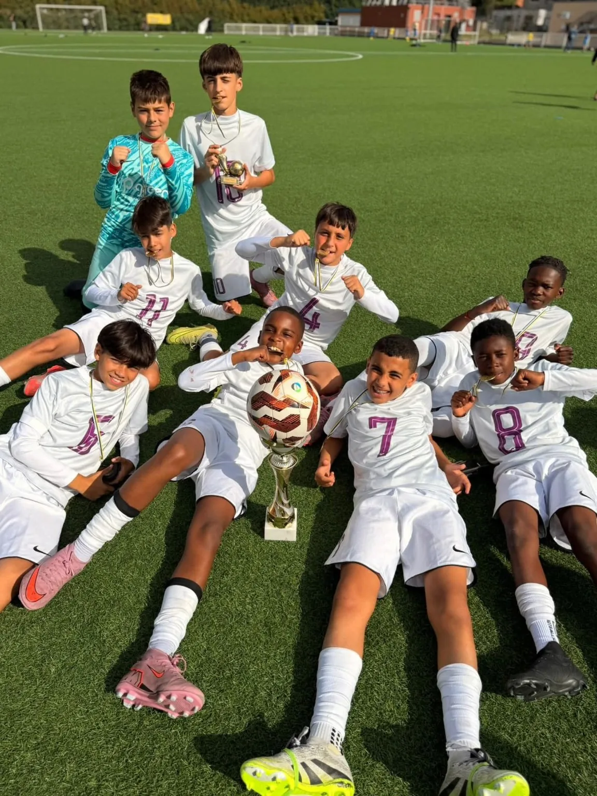

Formation
L'École de Football du HAC
De U4 à U13, une école de football à Houilles labellisée Label Jeunes FFF Excellence, socle du projet sportif du club.
Le socle du projet sportif
Avec des enfants accueillis dès la catégorie U4, l'École de Football constitue le socle du projet sportif du Houilles Athletic Club. Labellisé Label Jeunes FFF Excellence, le HAC souhaite proposer un environnement à la fois exigeant, éducatif et accessible, permettant à chaque jeune joueur de progresser à son rythme.
Direction de l'École de Football : Fabio Batista. Avec les éducateurs du club, il pilote l'organisation et le projet sportif des catégories U4 à U13.
Au quotidien, le travail des 20 éducateurs diplômés du club repose sur des priorités claires : le développement du joueur, l'apprentissage, le plaisir de jouer, la progression de chacun et la transmission de valeurs éducatives.

Notre approche
Un cadre exigeant, éducatif et accessible
Le développement du joueur
Chaque enfant progresse à son rythme, avec des contenus adaptés à son âge et à son niveau, de U4 à U13.
La qualité de l'encadrement
20 éducateurs diplômés encadrent les jeunes du club, et le HAC investit dans la formation continue de ses éducateurs.
L'apprentissage et le plaisir
Le plaisir de jouer reste le moteur de l'apprentissage : c'est lui qui construit les progrès durables.
Les valeurs éducatives
Respect, transmission et convivialité accompagnent chaque entraînement et chaque match du week-end.

Et après l'École de Football
Un parcours qui mène au niveau régional
L'École de Football prépare les jeunes joueurs à rejoindre les catégories de compétition du club. Les U14, U16 et U18, catégories de référence du HAC, évoluent au niveau régional : la continuité du parcours de formation est au cœur du projet.
Saison 2026/2027
Inscrire son enfant au HAC
L'École de Football accueille les enfants dès la catégorie U4. Le dossier d'inscription 2026/2027 est disponible en téléchargement.